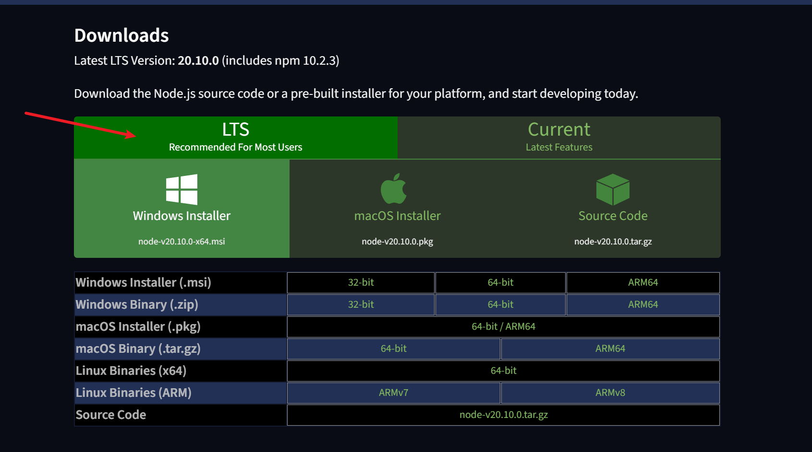
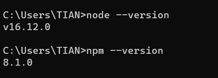
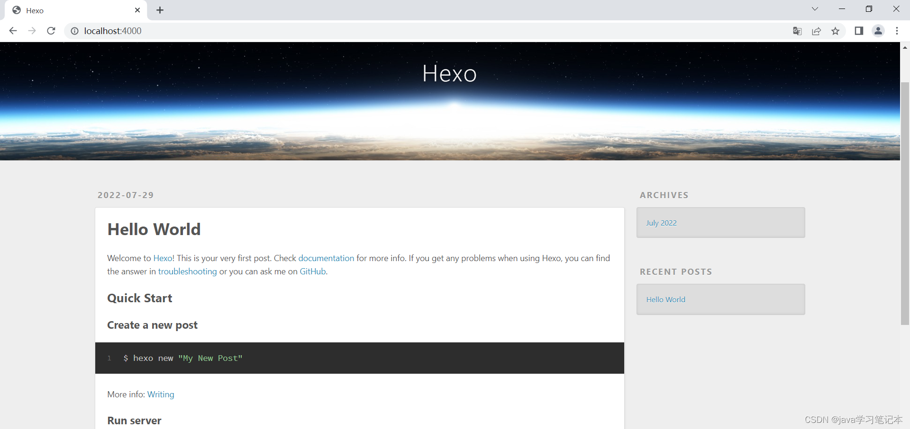
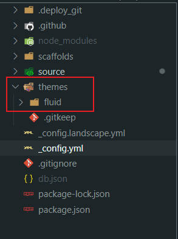
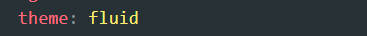
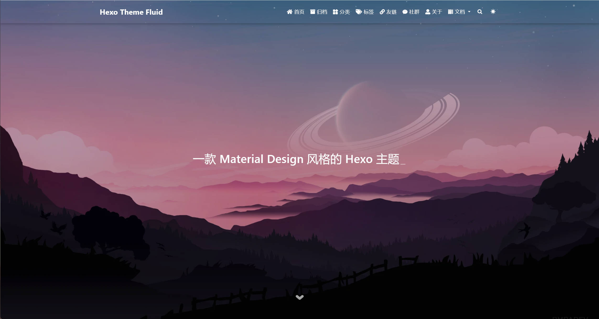

使用Hexo和Gitpage部署个人博客
Hexo&Fluid 博客搭建博客
Hexo
Hexo是一个基于Node.js的静态网站生成器，用于快速、简单地创建个人或团队博客。Hexo 的设计目标是轻量、快速、易用，它可以帮助用户将 Markdown 文档转换为静态网页，方便发布到服务器上。
Hexo 有以下特点：
- Markdown 支持： Hexo 使用 Markdown 语法，使得用户可以专注于内容创作而无需关心繁琐的 HTML 代码。
- 主题和插件： Hexo 支持丰富的主题和插件，用户可以根据自己的需求选择合适的主题，并通过插件扩展功能。
- 静态文件生成： Hexo 生成的网站是基于静态文件的，这意味着它可以轻松地部署到各种托管服务，如 GitHub Pages、Netlify 等。
- 快速构建： Hexo 具有快速的构建速度，这对于博客或需要频繁更新内容的网站是非常有利的。
- 一键部署： Hexo 提供了方便的一键部署功能，可以轻松地将生成的静态网站上传到服务器或托管平台。
安装 Node 和 NPM
前往Node 官网下载 Node 安装包，建议下载 LTS 版本，也就是长期支持版本

安装 Node（安装过程一路下一步就可以了）
安装完毕之后，按
Win+R输入cmd，在弹出的命令行中输入node --version和npm --version，如果打印出版本信息那么恭喜你安装成功了！
安装 Hexo
打开 CMD 窗口，执行命令
1
npm install -g hexo-cli初始化 Hexo，并运行
1
2
3
4
5# 初始化Hexo项目
hexo init
# 启动Hexo服务，按Ctrl+C可以关闭Hexo服务
hexo server通过浏览器打开网址
http://localhost:4000，就可以看到简单的初始页面
更换主题
可以前往Hexo 官方主题演示选择一个自己喜欢的主题，也可以查看这篇文章「Hexo 博客主题推荐」，其中是我个人比较推荐的主题。
将主题下载后，将其放入 Hexo 博客目录的
themes目录下
修改根目录下的
_config.yml配置文件，找到 theme 参数，修改为你下载的主题的目录名
清理缓存，重新运行
1
2
3
4
5# 清理缓存
hexo clean
# 重新启动Hexo服务
hexo server通过浏览器打开网址
http://localhost:4000，就可以看到更换主题后的博客页面
至此基于 Hexo 的博客就搭建完毕了
使用Hexo和Gitpage部署个人博客
http://tblog.zh-ti.top/2023/01/20/deploy-hexo-blog/